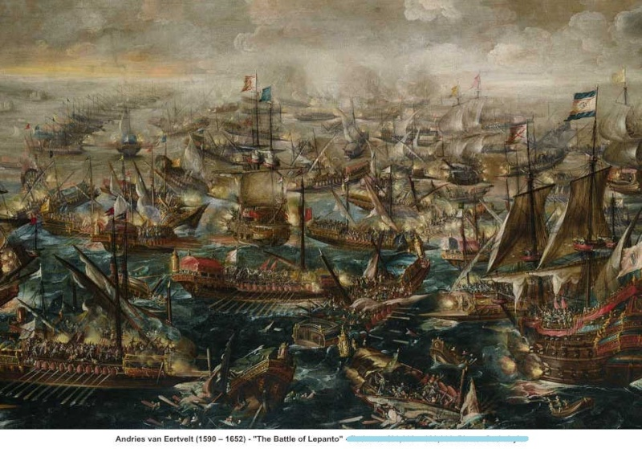
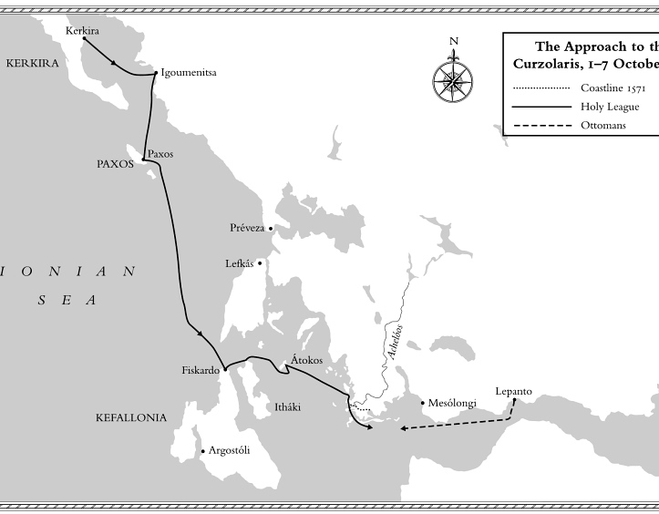
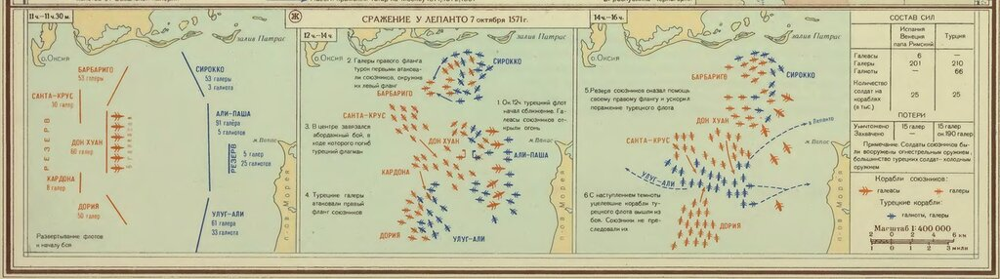

Взгляд на Лепанто с турецкой стороны: Кятиб Челеби
Оказалась ложной весть,
Поражением ― победа.
Должен был ты все разведать,
Все узнать и все учесть.
Н. Н. Туроверов. «И придет внезапно срок...» (1940)
Мы уже отмечали сдержанный характер оценок сражения при Лепанто турецкими авторами, которые называли его Сражением при Инебахти (İnebahtı Deniz Muharebesi), исходя из турецкого названия города Лепанто. Первым турецким автором, составившим наиболее полное описание битвы, был Кятиб Челеби, он же Мустафа Абдуллах, в книге «Тухфат ал-кибар фи асфар ал-бихар» («Подарок великим относительно походов на море»), написанной в 1645 году. В этой книге он вводит для битвы при Лепанто термин sefer-i sıngın donanma (سفر صنغن دننما ) , который переводится обычно как «экспедиция потерпевшего поражение флота», хотя и у Челеби, и у турецкого историка Ибрахима Эфенди Печеви в его «Истории», насколько я понимаю, смысл термина sıngın более туманный и неопределенный. Мне в него не удалось проникнуть.

Османские историки, а точнее хронисты, XVI-XVII вв., которые писали о Лепантно, были в той или иной степени встроены в систему администрации Османской империи, поэтому их оценки событий были достаточно политкорректны. Они хорошо усвоили, что мертвые не говорят, поэтому всю вину за поражение единодушно валили на погибшего в сражении Муэдзинзаде Али-пашу и его сыновей. А выживший Улудж Али-паша стал национальным героем. Иначе и не могло быть: ведь Улудж был назначен Адмиралом флота империи, и сомневаться в его квалификации при Лепанто значит поставить под сомнение решение султана об этом назначении, что исключалось.
Султан Османской империи Селим II. Музей Ага хан
В описании сражения при Лепанто в турецких источниках особый упор делался на то, что уже следующей весной обновленный турецкий флот вышел в море, т.е. поражение не было таким уж сокрушительным. И только один из заметных турецких историков той поры – Печеви – осмелился написать о том, что возрожденный турецкий флот так и не проявил решимости в проведении операции возмездия против флота христиан, действовал осторожно, как бы оглядываясь на событие прошлого 1571 года.
Кятиб Челеби завершил свой труд в 1655 году. Значительную часть информации о подготовке кампании 1571 года и состоянии флота он взял у хронистов-предшественников. Но в отличие от них, Челеби вовсе не касается отбытия флота из Стамбула. Он начинает свой рассказ с объединения флотов Пертев-паши и Муэдзинзаде Али-паши при начале захвата Кипра и последующего присоединения к ним эскадры Улудж Али-паши в составе двадцати кораблей. Совместно они атакуют остров Кефалония и захватывают три венецианских крепости. Приближается конец сезона, когда еше можно эффективно использовать флот. Но разведка османов не имеет никаких данных о местонахождении и планах действий флота Священной лиги. По крайней мере, Челеби ни словом о них не упоминает. Более того, расслабившись в конце трудного сезона, турецкое командование распускает на зиму (мы раньше подробно писали об обстановке накануне сражения, сложившейся на флоте османов) сипахов и тимариотов. Кроме того, получают отпуска некоторые гребцы и солдаты с галер флота Муэдзинзаде, когда он стал на якоря в Лепанто. И только тогда командование турецкого флота получает известие о приближении объединенного флота христиан.

Сближение флотов перед сражением при Лепанто
В отличие от других турецких хронистов Кятиб Челеби дает детальную информацию о составе флота Лиги.

Карты сражения при Лепанто из Морского Атласа.
Что касается флота Османской империи, то Челеби ограничивается обычным у турецких авторов замечанием о том, что флот Муэдзинзаде Али-паши в 1571 году вышел в море существенно раньше, чем в любую из предыдущих кампаний и к октябрю оказался довольно потрепанным. Поэтому, как мы раньше отмечали, на совещании у командующего, где предстояло принять решение о целесообразности встречи флота христиан в открытом море, все выступления касались как раз человеческого фактора. Пертев-паша считал, что количество и качество воинов на борту турецкого флота в тот момент не позволяет вступать в бой со свежими силами христиан. Он предложил остаться в порту и ожидать там атаки христиан. Но главком, ссылаясь на прямой приказ султана, принял решение выйти из Лепанто для встречи с противником в море. Улудж Али-паша, будучи не в силах повлиять на решение Муэдзинзаде, предложил вести бой не у берега, а выйдя далеко в открытое море, чтобы, с одной стороны, получить возможности маневра, а с другой, лишить малодушных бойцов возможности при неблагоприятном развитии событий повести свои корабли к берегу, где искать спасения (что и случилось на самом деле в реальном бою, когда не только рядовые воины, но и их генерал Пертев-паша бежали на берег, бросив свои корабли). Но и здесь главком настоял на своем решении сражаться у побережья, которое обрекло турецкий флот на поражение.
Мы еще поговорим подробно о причинах поражения турецкого флота при Лепанто, тогда и вернемся к оценкам турецкого историка.